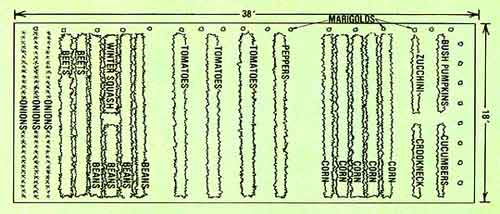

TOP, LEFT TO RIGHT: A small garden can be bountiful when the plot is well organized and water is available . . . as shown by a day's harvest of beans, beets, and corn. BELOW RIGHT TO LEFT : The closeness of the rows and lushness of the foliage eliminate many of the weeds and reduce the need to cultivate. From early beets to late pumpkins, the author invested only 7-1/2 hours of work and $24.75 in his vegetable plot.